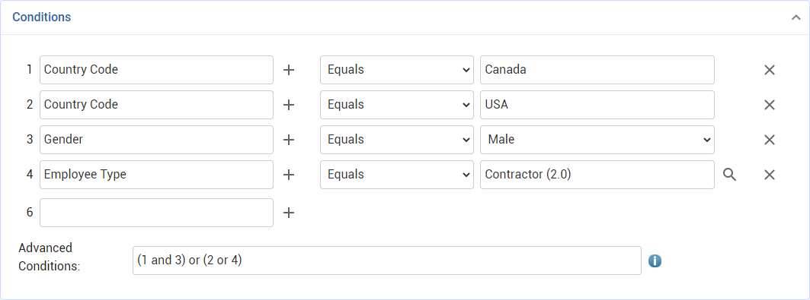

A display rule is similar to a business rule, except that display rules trigger immediately on values changing as opposed to triggering when the record is saved. Note: Most display rules will trigger without save, however a Layout display rule requires a save for the layout to change.
Display rules dictate what should happen to a layout or set of layouts as a record moves through a workflow. This can involve the following types of actions:
A Message/Toast action will display a standard pop-up message that the end user must close, or a "toast" message that fades after five seconds.
A Read-Only action will make a field read-only if a specific value is entered, locking it from editing.
A Filter action will filter a second field's picklist when a specific value is entered for a corresponding first field.
A Layout action will associate any record produced, or opened, with a specific layout when the rule's conditions are met within a workflow step. This overrides any associated, pre-configured layout logic, and the layout selector on applicable records will be disabled. Note: The Layout action requires a save for the layout to change.
A Require action identifies a specified field that is required on a workflow step's layout if the step meets the rule’s conditions. Note that while both workflow step configuration and display rules have the required and read-only options, these should not be configured in both for the same field. For a particular field, required and/or read-only should be configured in either the workflow step or a display rule, not both.
Only one of each action type can be used per display rule, i.e. one Filter action and one Read-Only action. A field can only be added once to a display rule.
If two different display rules fire at the same time, one making field A required and another making field A read-only: - If the two rules' priorities differ, the rule with the lower priority value will take precedence. - If the two rules' priorities are the same, the rule with the lower ID will take precedence. If a display rule to make a field read-only has fired, another that makes the field required cannot be created until the first is deleted (and vice versa).
Example: You can set up a display rule so that if Chief Complaint = "sprain" on the Occupational Illness/Injury layout, the following will happen:
- the Clinic Visit Reason, Discharge Date, Discharge Time, and Geographic Location fields will become read-only (disabled from editing), and - the only option in the Clinic Visit Status list will be "Arrived"
If the Chief Complaint is set to any value other than “sprain”, then those fields become editable again and the Clinic Visit Status field shows all options.
To create a display rule:
In the Administrator menu, choose Display Rules.
Click a code to open an existing rule, or click New.
In the Details section, enter a Code and Description, select the Entity for which the rule will apply, and enter a Priority for the rule. The priority can be any integer, and determines the order that the rule is processed if there are multiple rules. Lower number priorities are processed first. Select one or more Layout associated with the selected Entity. The display rule will trigger when conditions are true on any of the specified layouts. If no layout is specified, the display rule will trigger on all layouts associated with the selected Entity.
In the Conditions section, define the conditions that will trigger the rule:
Click to select the property of the entity you wish to enforce a constraint on (currently only first-level fields are supported).
Currently only the Equals operator is supported.
Specify any value that the property should compare with. Depending on the type of property you select, there may be a date selector or picklist icon to help you choose a value.
To remove a condition, click the X at the end of the row.
By default, multiple conditions for the same property are treated as OR. Conditions for different properties are treated as AND. For example:
1. Country, Equals, Canada
2. Country, Equals, USA
3. Sex, Equals, Male 4. Employee Type, Equals, Contractor
... would be evaluated as: (1 or 2) AND 3 AND 4
The numbers correspond to the row numbers assigned to each condition. The default logic can be overridden in the Advanced Conditions field by using the row numbers to identify the individual conditions, e.g. (1 and 3) OR (2 and 4).

Click Save.
In the Display Rule Actions section (this section only appears after the rule has been saved), specify the actions to be performed when the rule is fired.
Only one of each action type can be used per display rule, i.e. one Filter action and one Read-Only action. A field can only be added once to a display rule. If multiple actions including a Message/Toast action are executed for a given condition, the Message/Toast will be executed last.
To create a Message/Toast action:
Ensure at least one condition is defined with "<field> Equals <value>".
Choose Actions»Create new Display Rule Message/Toast Action.
Enter a Name and optionally a Description.
Enter the text of the Message.
If you want the message to fade automatically after five seconds, select the Is Toast checkbox. If this is not selected, the end user will have to manually dismiss the message when they see it.
Click Save.
To create a Read Only action:
Ensure at least one condition is defined with "<field> Equals <value>".
Choose Actions»Create new Display Rule Read Only Action.
Enter a Name and optionally a Description, then click Save.
In the Fields section, enter the field(s) that should be made read-only if the condition field value is met. The field(s) will remain editable if the condition is not met.
To create a Filter action:
Ensure at least one condition is defined with "<field> Equals <value>".
Choose Actions»Create new Display Rule Filter Action.
Enter a Name and optionally a Description, then click Save.
In the Fields section, select the secondary field to be filtered when the condition field value is met, and the values (up to 10) that will be allowed in that field.
To create a Layout action:
Ensure at least one condition is defined with "<field> Equals <value>".
Choose Actions»Create new Display Rule Layout Action.
Enter a Name and optionally a Description, then select one of the layouts that are compatible with the entity specified.
Click Save.
To create a Require action:
Ensure at least one condition is defined with "<field> Equals <value>".
Choose Actions»Create new Display Rule Require Action.
Enter a Name and optionally a Description.
Click Save.
Select the field(s) that are compatible with the entity specified.
 to select the property of the entity you wish to enforce a constraint on (currently only first-level fields are supported).
to select the property of the entity you wish to enforce a constraint on (currently only first-level fields are supported).